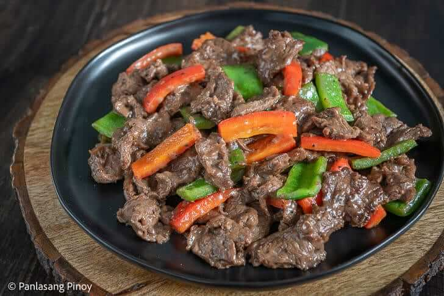

Beef Stir Fry

How to cook beef stir fry
Before we begin the cooking process, it’s important to assemble all your ingredients beforehand. Luckily, for beef stir fry, there aren’t many ingredients that require preparation. Cut your 1 lb. of beef tenderloin into thin slices. This recipe calls for two bell peppers –– one red and one green. These should be chopped too, but the slices can be much thicker.